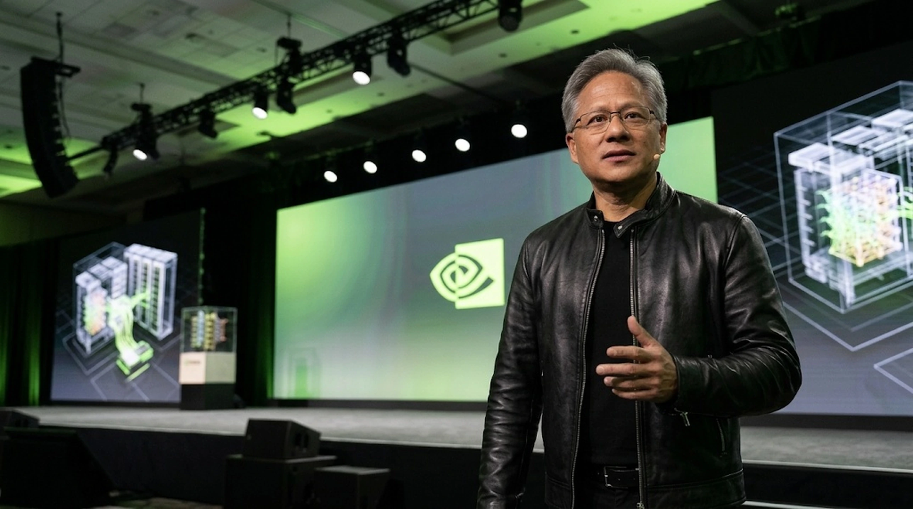

Nvidia Reinstates Jensen Huang as CEO, Ending a Leadership Crisis but Not the Governance Questions
Nvidia's board restored Jensen Huang as CEO, reversing course while national-security and governance investigations continue.

Nvidia has reinstated co-founder Jensen Huang as president and chief executive, reversing a leadership change that had unsettled investors and raised questions about governance at the world’s most influential artificial intelligence chipmaker. The board’s decision takes effect immediately and returns the company to the leadership structure that oversaw its transformation from a graphics-chip designer into a central supplier of AI computing infrastructure.
The company announced the decision on November 23. Its board voted unanimously after discussions with Huang and said it had become satisfied with his candour and ability to lead. Nvidia also said the board received input from senior US government officials and concluded that his return did not pose a national-security risk.
The reversal comes eleven days after Huang resigned on November 12. At that time, Nvidia appointed Chief Financial Officer Colette Kress as interim CEO and said the board would begin searching for a permanent successor. Kress will now return to her CFO responsibilities, while Harvey C. Jones remains chairman of the board. Related context: Europe's Sovereign Cloud Push Challenges US Tech Dominance, but Migration Remains Slow
The speed of the reversal is significant. Nvidia had presented the original departure as an immediate transition and described Kress as an experienced executive capable of maintaining operations and the company’s technology roadmap. Reinstating Huang so quickly suggests that the board concluded the business, its partners and shareholders would be better served by restoring its founder rather than continuing with a succession process.
The market response was dramatic. Nvidia shares rose sharply after the announcement, with Reuters reporting a gain of more than 25% in premarket trading and a rally of roughly one-third in early trading. The move reflected the importance investors attach to Huang’s role in the company’s strategy, customer relationships and position in the AI industry.
Huang’s influence is unusually broad. Nvidia’s business depends on more than the performance of individual processors. Its competitive position is built around accelerated computing systems, networking, software and a developer ecosystem that helps customers deploy AI workloads. The CEO has been closely associated with the company’s product roadmap and its relationships with cloud providers, research organisations and large technology customers.
That concentration of strategic authority can be valuable during a period of rapid technological change. Customers making multiyear infrastructure commitments want confidence that Nvidia will continue to execute its roadmap and support the software environment built around its hardware. A sudden leadership change could have complicated those decisions, particularly as competitors seek to challenge Nvidia’s position.
But the return of the founder does not resolve the governance issues that led to the crisis. Nvidia said an independent-director committee would continue investigating reports that Huang had been the target of a foreign intelligence effort. The company said the committee had retained independent legal counsel and that Huang would cooperate with the investigation.
The board has also established a separate National Security and Export Control Committee. Its remit includes oversight of trade-compliance and national-security risks. Nvidia said it would seek a new chief compliance officer who would oversee compliance across the company and report to the board’s Nominating and Corporate Governance Committee.
Those steps matter because Nvidia operates at the intersection of commercial technology and national security. Its advanced processors are central to AI development, while US export controls restrict access to some high-performance computing products in China and other destinations. Any indication that sensitive chips or technology have reached restricted users could create legal, regulatory and reputational consequences for the company.
The issue is not limited to one executive. Nvidia’s customers, suppliers and investors need confidence that the company can enforce export restrictions, monitor distribution channels and maintain reliable controls as demand expands across regions. A stronger compliance structure could increase oversight costs, but it may also reduce the risk of disruptions to sales and partnerships.
The board’s statement that it received input from US government officials is also notable. It shows that the decision was made in a context where corporate leadership and national-security considerations had become closely connected. Nvidia has not said that the investigations are complete, and reinstatement should not be interpreted as a final finding on every allegation or concern.
For investors, the immediate question is whether Huang’s return restores confidence without distracting management from execution. Nvidia must continue delivering its product roadmap, meeting customer commitments and navigating an increasingly complex regulatory environment. The company also faces the broader challenge of sustaining demand as cloud providers and other customers evaluate the returns on large AI infrastructure investments. Related context: Trump’s Data-Center Tax Threat Puts AI Infrastructure Plans Under a New Cloud
The share-price reaction indicates that investors viewed the leadership uncertainty as a significant risk. Yet a sharp one-day rise cannot establish that all concerns have disappeared. The board still has to demonstrate that its oversight procedures are credible and that the company can manage compliance independently of any single executive.
Nvidia has restored its most recognisable leader. The next test is whether it can use that stability to reinforce the governance and controls required of a company whose products have become strategically important to governments, businesses and the global technology supply chain.